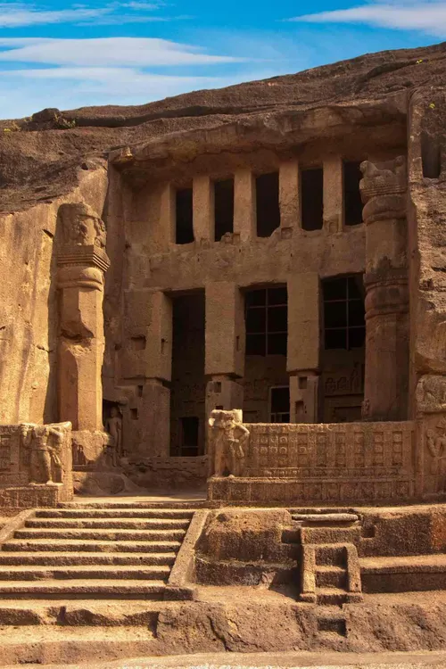

Kanheri Caves

The Kanheri Caves are a group of ancient rock-cut caves located in the lush Sanjay Gandhi National Park
in Mumbai. Dating back to the 1st century BCE, these caves served as a Buddhist monastic center and
feature intricate carvings and inscriptions.
History
The Kanheri Caves were used by Buddhist monks as places of meditation and learning. The caves contain
prayer halls, viharas (monastic cells), and stupas. Over the centuries, they became an important hub for
Buddhist teachings and a symbol of religious harmony in the region.
Significance
The Kanheri Caves are renowned for their historical and architectural value. They provide insights into
the life and practices of Buddhist monks in ancient India. Surrounded by greenery, the caves are a
serene retreat for history enthusiasts and nature lovers alike.